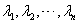
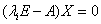
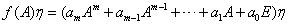
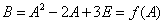
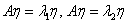
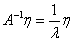

5.1 特征值与特征向量
一、特征值与特征向量
注：①定义说明特征值与特征向量是紧密相连的概念，对每个特征值必有属于它的特征向量，且有无穷多个；而对每个特征向量必属于某个特征值，且只属于一个特征值。 ②特征向量必须是非零向量，且必是列向量。 ③若 因 |
我们看一下A的特征多项式： 设 由行列式计算可知，行列式的值确是 |
|
下面我们从定义出发来推导求特征值、特征向量的方法： 1、写出并计算A的特征多项式； 2、求特征方程的所有根，共有n个根（其中可能有复根，也可能有重根），这些根即为A的全部特征值； 3、对于A的每一个特征值，求解齐次线性方程组，则方程组的每一个非零解都是A的属于特征值 |
|
例1：设，求A的所有的特征值和特征向量。 解：A的特征多项式 则A的两个特征值为 对，求解齐次方程组 由此可求出方程组一个基础解系为，则A的属于的全部特征向量为，对，求解齐次方程组。 由此可求出方程组的一个基础解系为，则A的属于的所有特征向量为 |
|
例2：求的特征值和线性无关的特征向量。 解：A的特征多项式 因此A的特征值为 对 于是方程组的一般解为，得一个基础解系为，即为A的属于 对（单根），求解 于是方程组的一般解为，得一个基础解系为，即为A的属于的线性无关的特征向量。 |
|
例3：证明：三角矩阵的特征值就是它的全体对角元。 证：不妨设A为n阶上三角矩阵 则A的特征多项式为 它的n个根就是A的n个对角元，即为A的n个特征值。 |
|
对于抽象的矩阵A，或由定义，或由求特征值的方法可以求出A的特征值和特征向量。 例4：设已知，证明： （1）， （2）， （3）设 证：（1）用归纳法，当 于是对于任何自然数 （2）由，两边与数 （3）设 于是 则有 说明：本例的结论很重要，希望能记住，特别是（3）给出了求多项式方阵的特征值的一个简便计算方法。只要是A的特征值，那么一定是 |
|
例5：设，求的所有特征值。 解：由A是二阶上三角矩阵，其两个特征值为对角元1和3，而，这里。 所以B的两个特征值就是。 |
|
例6：求出以下特殊的n阶方阵A的所有可能的特征值（m为某个正整数）： （1）（称A为幂零矩阵） （2）（称A为对合矩阵） 解：设，则 （1）由，而，则 （2）由，而，则，即 注：本例说明幂零矩阵的特征值必为0，对合矩阵的特征值必为。 |
|
例7：若方阵A满足，问A有哪个数为它的一个特征值？若，又A有哪个数为一个特征值？ 解：当，说明2为特征方程的一个根，即2为A的一个特征值。 当时，因，所以-1是A的一个特征值。 |
二、关于特征值和特征向量的若干结论
|
命题1：实方阵的特征值未必是实数，特征向量也未必是实向量。 例8：求的特征值和特征向量。 解：由A的特征多项式 则A的两个特征值为，并计算得到A的属于的特征向量为A的属于特征值的特征向量为 |
|
命题2：一个向量 证：设有，则，因，所以必有 命题3：n阶方阵A和它的转置矩阵 证：由 说明A与 命题4：设是n阶方阵 证：我们仅以二阶方阵对本命题说明：设，则A的特征方程为，又因为A的两个特征值，即为特征方程的根。 也就有 比较两个方程的系数，即得 |
|
我们再以例2为例，三阶方阵A的三个特征值是，而A的对角元为，它们的和都是15，而 例9：已知三阶方阵A的特征值为，求行列式的值。 解：记，则 由A的特征值为，则 |
|
命题5：n阶矩阵A可逆 证：A可逆 设，两边左乘 因，所以 |
请认真答题，测试一下你对前面知识点的学习情况！
(单选题) 21．设矩阵，则A的特征值为（ ）
【答案】B
【解析】故A的特征值为
-1,1,1。
【知识点】特征值与特征向量